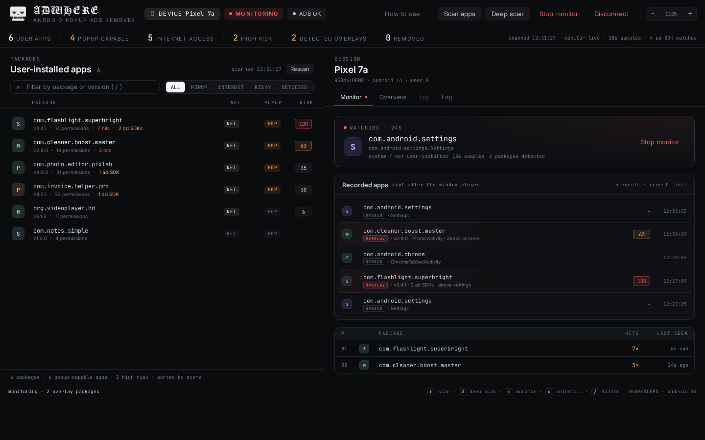
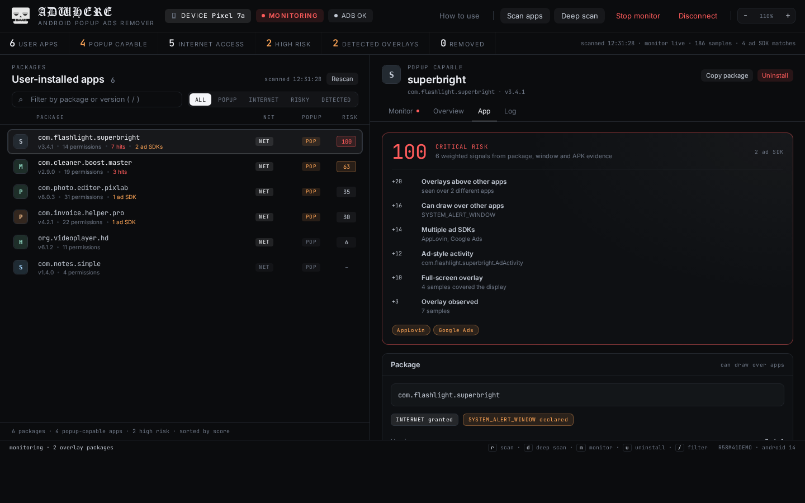
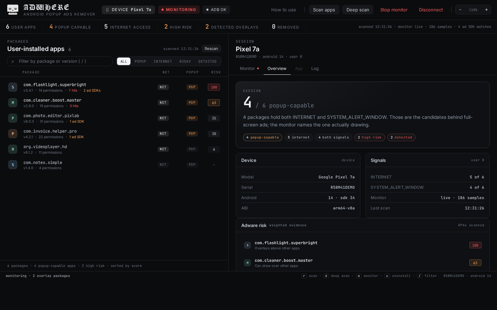

Live window evidence
Cross-app overlay history, full-screen coverage, ad-style activity names, overlay window types and whether the package is drawing right now. The monitor captures the moment instead of asking you to remember it.
v1.0.0 · Linux x86-64 · ADB over USB
Popup ads hide in a window that is drawn above whatever you are using. ADWHERE watches the phone's window stack over ADB, shows the app on screen and records the overlay package, icon and evidence before the ad disappears. Then it removes the package you confirm.
The live monitor
The monitor reads dumpsys window while you use the phone. It names the foreground app, then separates every other package that is drawing above it: system alert windows, full-screen interstitials and ad-style activities.
Each foreground change and each first overlay sighting is written to the session trail with the package, activity, version, risk score, ad SDKs and the app it covered. When the popup closes, its row stays in the trail with the icon and evidence intact.
The phone is read over ADB. Nothing is installed, no screen recording is captured and no data leaves the machine. The monitor starts automatically when the device connects.
Detection
A single permission is not proof of adware. The score combines package traits, live window behaviour and code inside the APK.
Cross-app overlay history, full-screen coverage, ad-style activity names, overlay window types and whether the package is drawing right now. The monitor captures the moment instead of asking you to remember it.
Missing launcher entry, boot receiver, old target SDK, sideloaded installer, install-packages, phone-state and package-query permissions. Legitimate apps can match some of these; a popup ad usually matches several.
Deep scan reads classes*.dex straight from the installed APK and looks for 17 known ad SDK families: Google Ads, AppLovin, Unity, Pangle, Meta, Mintegral, ironSource, Vungle and more. Results are cached per package version.
Every point has a reason and a weight. Overlay permission adds 16, stacked ad SDKs add 14, cross-app overlays add 20, and a clean APK subtracts 6. Critical, high, medium and low map to concrete evidence instead of a black-box verdict.
The icon is read from the installed APK and cached locally, so every row, detection and recorded event shows the real app mark. The monitor fetches icons for foreground and system packages too, not only the scanned list.
Uninstall is one explicit action with a confirmation dialog. It runs pm uninstall for the selected user package only. The rest of the phone, its data and its system apps are untouched.
Screenshots
Real interface, populated with a synthetic adware session for the demo.

Current app with icon and activity, plus every overlay saved with its risk and the app it covered.

Each weight is visible, from cross-app overlays to ad SDKs found in the APK.

Popup-capable count, high-risk packages and the riskiest apps in the scan.
Install
Download the Linux build, make it executable and attach an Android phone with USB debugging enabled. No account and no Python runtime required.
Current release
A single native build with the live monitor, risk engine, icon cache, APK deep scanner, the original command-line helpers and its own adb embedded.
or install with curl
curl -fLO https://raw.githubusercontent.com/USER/REPO/main/downloads/adwhere
Download the Linux x86-64 release above and put it somewhere on your PATH, or run it from the Downloads folder.
Tap Build number seven times, open Developer options, enable USB debugging, plug the phone in and accept the Allow USB debugging? prompt. The app also has an in-window guide.
Press Connect. The monitor starts automatically. Use the phone normally; when an ad draws over another app, read its icon, package and evidence in the trail, then uninstall only that package.
Verify before you run. Compare sha256sum adwhere with the published SHA256SUMS. The tool reads package and window metadata over ADB; it uninstalls only the package you confirm.
# ADWHERE v1.0.0, Linux x86-64 # replace USER/REPO with your GitHub repository $ curl -fLO https://raw.githubusercontent.com/USER/REPO/main/downloads/adwhere $ chmod +x adwhere $ ./adwhere # optional: verify the download $ curl -fLO https://raw.githubusercontent.com/USER/REPO/main/downloads/SHA256SUMS $ sha256sum -c SHA256SUMS # the bundled adb and monitor start when the phone connects # no android-tools install is required
# compare with the published SHA256SUMS $ curl -fLO https://raw.githubusercontent.com/USER/REPO/main/downloads/SHA256SUMS $ sha256sum -c SHA256SUMS adwhere: OK # or check the hash directly $ sha256sum adwhere
Privacy and safety
The app talks to the local ADB server and the attached phone. It has no account system, no analytics, no cloud backend and no telemetry.
Package metadata and window dumps stay in the desktop process. Icons and deep-scan results are cached under ~/.cache/adwhere on this machine. Nothing is uploaded and no screen is recorded.
The monitor is read-only. It reads the window list, package dumps and APK bytes. The only write action is the uninstall you explicitly confirm, which runs pm uninstall for one selected user package.
Before you remove anything: adware signals can overlap with accessibility, automation and launcher apps you rely on. Read the package name and the weighted reasons first. Uninstall deletes the app and its local data permanently.
The UI and ADB bridge do not call a remote service. Deep scan reads the APK already installed on the phone.
The monitor samples window metadata; it does not capture pixels, audio, notifications or keystrokes.
A dialog names the package before pm uninstall runs. Cancelling leaves the device untouched.
Stop guessing
Download the Linux build, connect the phone and let the monitor keep the record for you.